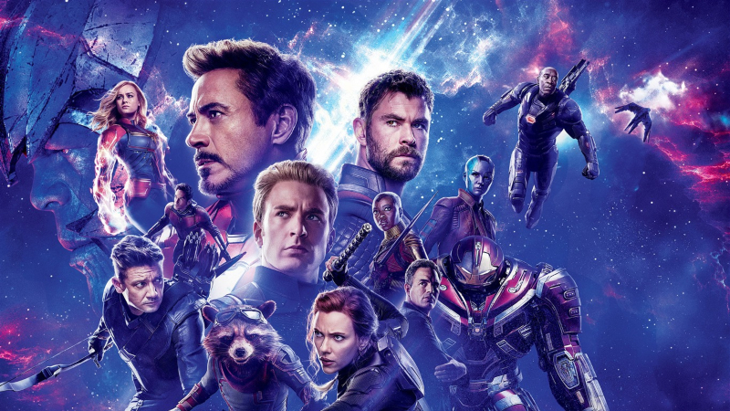

Top1.Avengers: Endgame $2.797 tỉ
 5 năm sau cái búng tay của Thanos khiến một nửa sinh vật sống “bay màu”, bộ phim “Biệt Đội Siêu Anh Hùng: Hồi Kết” gợi nhớ về hàng loạt sự kiện trong quá khứ như một lời tri ân đến các khán giả cũng như dàn diễn viên đã đồng hành cùng Marvel nói chung cũng như phim về siêu anh hùng nói riêng.Đạo Diễn: James Cameron
Top2.The Lion King $1.656 tỉ
 Nhân vật chính của Vua sư tử là chú sư tử con Simba, con trai của Mufasa, vị vua đang thống trị thế giới hoang dã ở đây. Cuộc sống hạnh phúc yêu đời bên cạnh cha mẹ và cô bạn Nala của cậu sớm chấm dứt khi người chú ruột Scar (mặt sẹo) có âm mưu cướp ngai vàng của cha cậu.
Nhân vật chính của Vua sư tử là chú sư tử con Simba, con trai của Mufasa, vị vua đang thống trị thế giới hoang dã ở đây. Cuộc sống hạnh phúc yêu đời bên cạnh cha mẹ và cô bạn Nala của cậu sớm chấm dứt khi người chú ruột Scar (mặt sẹo) có âm mưu cướp ngai vàng của cha cậu.Đạo Diễn: Roger Allers, Rob Minkoff
Top3.Spider-Man: Far from home $1.131 tỉ
Sau sự hi sinh của Iron Man, nhiều người vẫn lầm tưởng rằng “Avengers: Endgame” là tác phẩm kết thúc MCU, nhưng thật ra “Spider-Man: Far From Home” mới là tác phẩm khép lại phase 3 của Marvel.Đạo Diễn: Jon Watts
Top4.Captain Marvel $1.128 tỉ
Mang sức mạnh vĩ đại và có thể xoay chuyển cả một hành tinh, Captain Marvel (do Brie Larson thủ vai) là vị cứu tinh giúp Biệt đội siêu anh hùng chống lại Thanos sau thất bại ở trận “Infinity War”.Đạo Diễn: Anna boden, Ryan Fleck
Top5.Toy Story 4 $1.073 tỉ
Sau gần 9 năm vắng bóng, bộ phim về chàng cao bồi Woody và cảnh sát Buzz Lightyear trở lại với màn ảnh và mang đến nhiều xúc cảm khác nhau, thu hút cả người lớn và trẻ em.Đạo Diễn: Josh Cooley